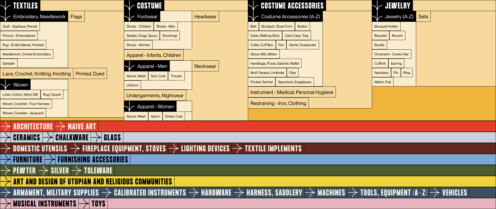

Themes
Qualitative Approach
Grouping objects of the Index by thematic hierarchy, using organizing principles provided in "The Consolidated Catalog to The Index of American Design"

<buttons in development>Contributors
Quantitative Approach
Grouping objects of the Index by contribution count
Map
Spatial Approach
Grouping objects of the Index by geography, as provided in "The Consolidated Catalog to The Index of American Design"
All Objects
Visual Approach
Displaying an overview of all objects in the Index - ordered by matching title text - using natural language processing (NPL) techniques